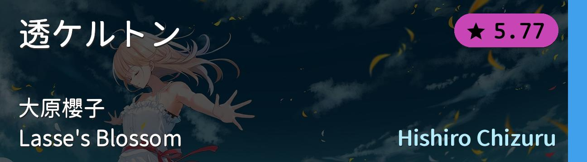
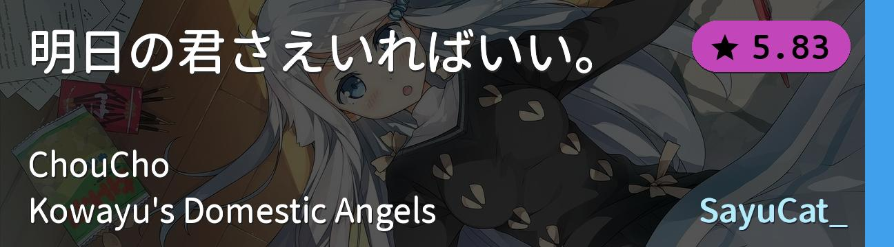
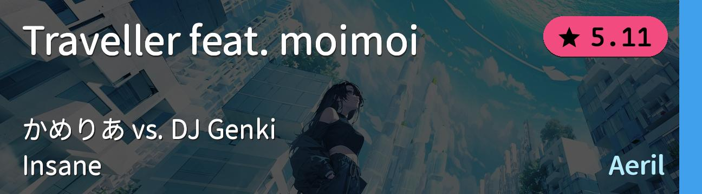
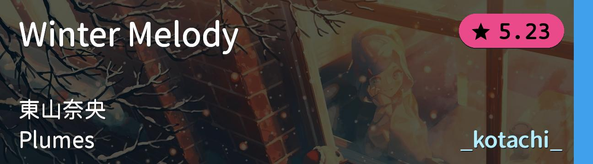
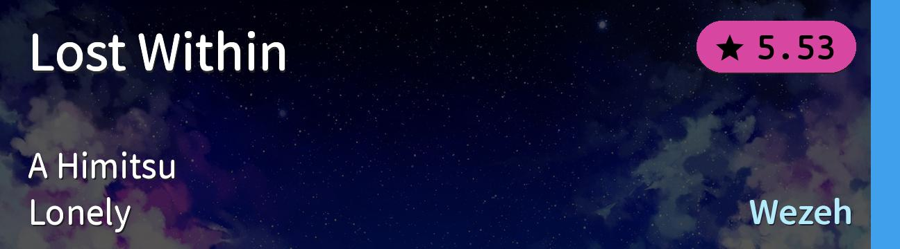
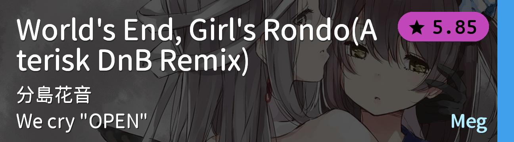
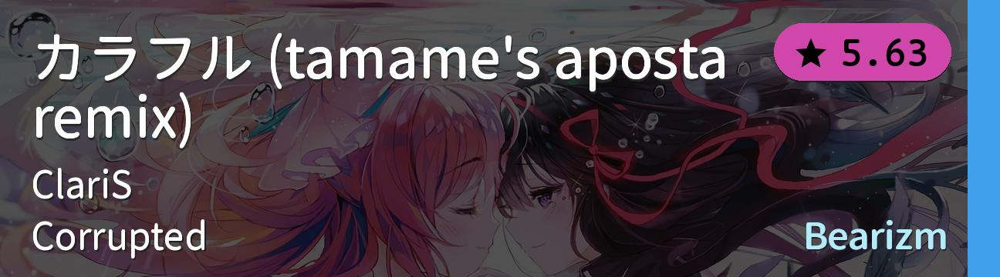

| # | BID | Beatmap Info | Mods | BPM | Hit Length | Max Combo | CS | AR | OD | Notes |
|---|---|---|---|---|---|---|---|---|---|---|
| 1 | 3093632 |  | NM | 182.0 | 4:24 | 1562 | 4.0 | 9.0 | 8.0 | 常规综合1 |
| 2 | 3877103 | NM | 188.0 | 3:58 | 1564 | 3.6 | 9.2 | 9.0 | 常规综合2 | |
| 3 | 3847864 |  | NM | 178.0 | 4:56 | 1795 | 4.5 | 9.3 | 9.0 | 常规综合3 |
| 4 | 4495373 |  | NM | 170.0 | 5:36 | 2259 | 4.0 | 9.0 | 8.5 | 长图综合1 |
| 5 | 4345735 |  | NM | 164.0 | 5:41 | 1846 | 3.8 | 9.0 | 8.5 | 长图综合2 |
| 6 | 1922594 |  | NM | 180.0 | 5:23 | 1735 | 4.2 | 9.3 | 8.7 | 长图综合3 |
| 7 | 734339 |  | NM | 175.0 | 5:23 | 2048 | 4.0 | 9.0 | 8.0 | 长图综合4 |
| 8 | 1812393 |  | NM | 175.0 | 5:21 | 2336 | 4.0 | 9.0 | 8.0 | 长图综合5 |
| 9 | 1138055 | NM | 175.0 | 5:30 | 2723 | 4.0 | 9.3 | 8.6 | 长图综合6 | |
| 10 | 4557507 | NM | 172.0 | 5:11 | 2055 | 4.0 | 9.4 | 8.0 | 长图综合7 |